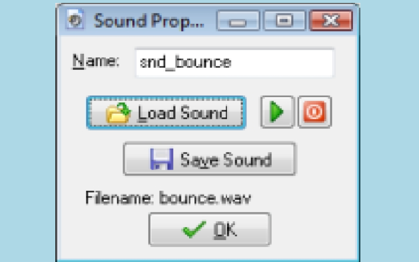

1. From the Resources menu, choose Create Sound. The Sound Properties form appears. Click on
the Name field and rename it to snd_bounce.
2. Click on the Load Sound button, navigate to the Resources folder that came with the tutorial,
and select the sound file bounce.wav. The form should now look as shown in image below.
3. Press the OK button to close the form.

4. Create another sound resource and name it snd_click.
5. Click the Load Sound button and select the sound file click.wav.
6. Close the form.
Within the sound properties form you can use the play button, with the green triangle pointing to the
right, to listen to the sound (it is constantly repeated). Again, notice that the two sounds are shown in
the list of all resources